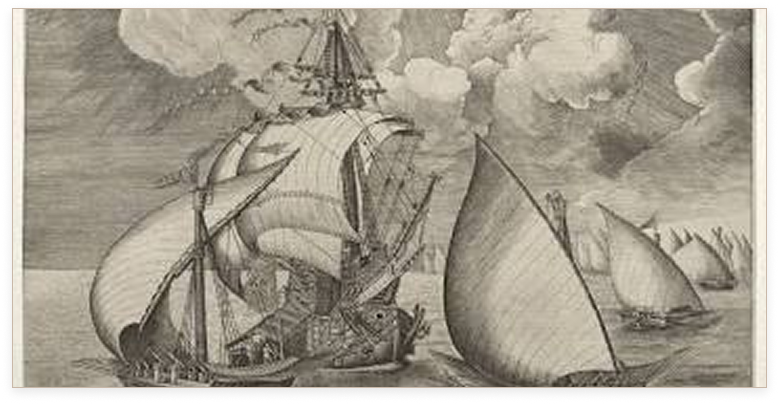

1534
Dalle Ande All’Europa
La sua storia comincia nelle Ande: in Cile sono stati trovati resti selvatici di 13mila anni fa, e le popolazioni intorno al lago Titicaca la coltivavano anche a 3-4mila metri. Per gli Inca era un alimento vitale e perfino oggetto di culto. Con i conquistadores la patata arrivò in Europa, nei porti spagnoli, intorno al 1534.
